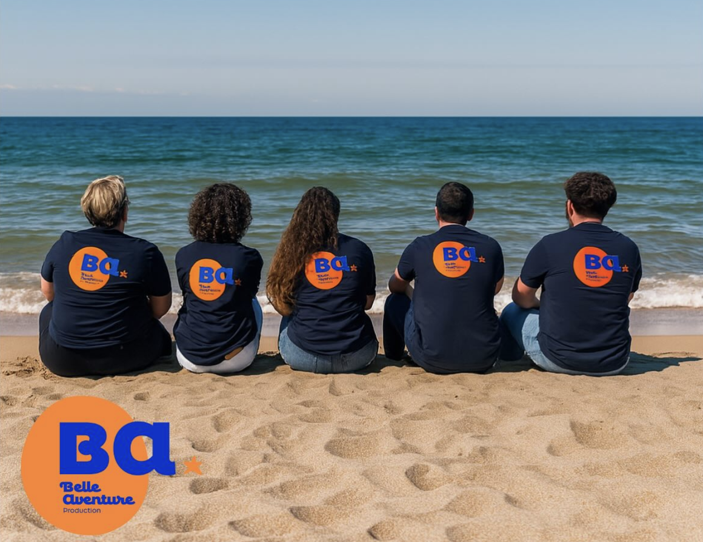
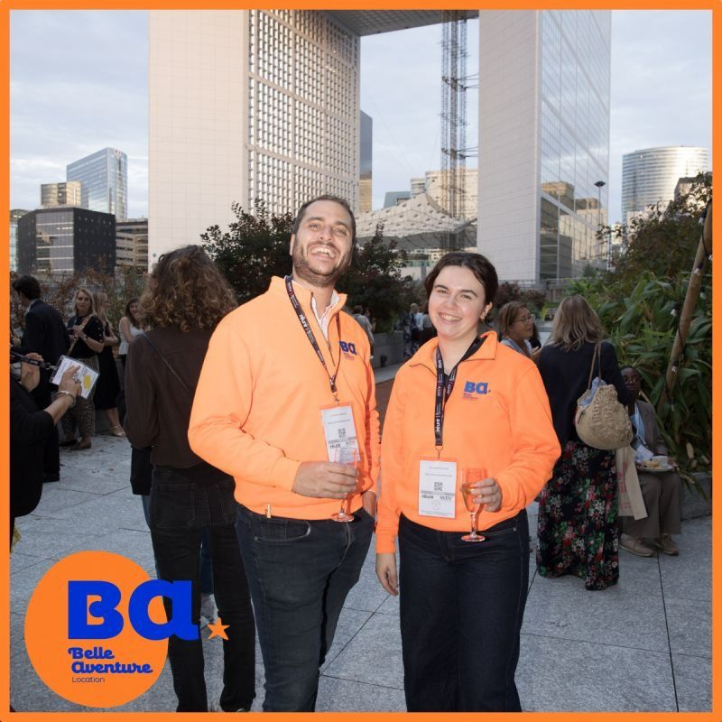
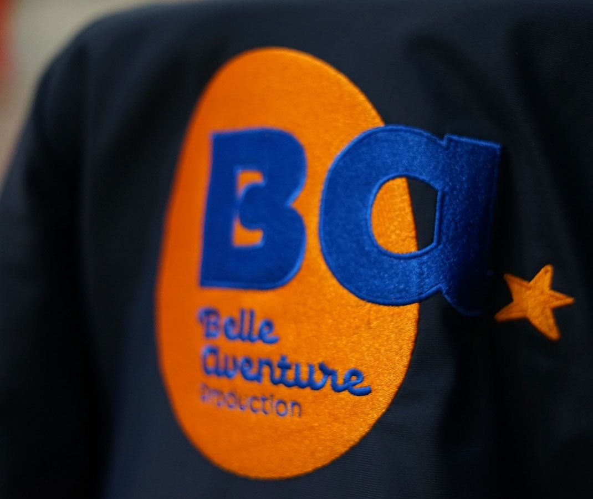

Alternance — Développement commercial événementiel
Belle Aventure
Production
Alternance en développement commercial au sein de Belle Aventure Production, agence événementielle spécialisée dans l'animation et la location de structures festives. Du 31 août au 16 octobre 2026, une mission centrée sur la prospection, la relation client et la préparation des offres commerciales.



Le contexte
Découvrir les coulisses du développement commercial d'une agence événementielle
Belle Aventure Production est une agence événementielle spécialisée dans l'animation et la location de structures festives. Rejoindre son équipe en alternance, c'était découvrir le quotidien d'une agence où créativité, événementiel et relations humaines sont au cœur de chaque projet.
Le poste de Business Developer événementiel a permis d'explorer un versant différent du métier : non plus seulement concevoir et coordonner des événements, mais aussi comprendre comment une agence construit sa clientèle, répond à ses besoins et transforme une opportunité commerciale en projet événementiel concret.
Mes missions
Prospection, relation client et préparation commerciale
- Prospection et développement de nouvelles opportunités commerciales
- Échanges avec les clients et construction d'une relation de confiance
- Analyse des besoins et conception d'animations adaptées
- Participation à la préparation des offres commerciales et des devis
- Préparation et présence sur des salons professionnels
- Découverte des projets événementiels, de leur préparation jusqu'à leur réalisation
Bilan
Une étape formatrice, suivie d'une nouvelle recherche d'alternance
Cette alternance a pris fin le 16 octobre 2026, d'un commun accord entre Manon et Belle Aventure Production, suite à un décalage entre les besoins de l'entreprise, les attentes du poste et l'accompagnement qu'elle pouvait proposer à ce stade de sa formation.
Cette expérience reste une étape formatrice : elle a permis de découvrir en conditions réelles les coulisses du développement commercial d'une agence événementielle, et de confirmer un vrai goût pour la prospection et la relation client. Manon poursuit aujourd'hui la recherche d'une nouvelle entreprise d'accueil pour continuer son Bachelor Événementiel en alternance dans la métropole lilloise.